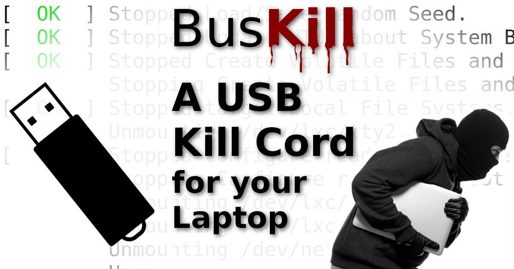

Welcome to BusKill’s documentation!¶
Welcome! BusKill’s documentation is split into 4 main parts:
For information on using the BusKil App, see Software User Guide.
For information on how to build your own BusKill cable, see Hardware Developer Guide.
Note
If you’re looking to order a pre-assembled BusKill cable, you can buy a BusKill cable here.
Revenue from BusKill cable purchases go to supporting this open-source project. Please consider purchasing a cable or making a donation if you build your own.

source: Michael Altfield’s tech blog¶
What is BusKill?:
- Introduction
- Frequently Asked Questions
- Q: What is BusKill?
- Q: Where can I buy a BusKill cable?
- Q: What actions can I trigger with BusKill?
- Q: Self-destruct?!? Will this brick my computer?
- Q: What about false-positives?
- Q: What about interdiction?
- Q: Could an attacker clone my BusKill drive and quickly insert it before stealing my laptop?
- Q: But I’m using 2FA and my OS has FDE with AES 256 and a 20-word passphrase.
- Q: But bluetooth…
- Q: How can I get updates about BusKill?
- Q: My questions isn’t listed. Where can I get support?